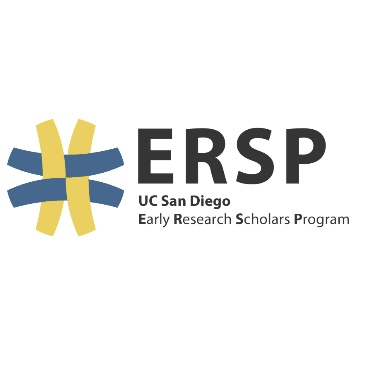
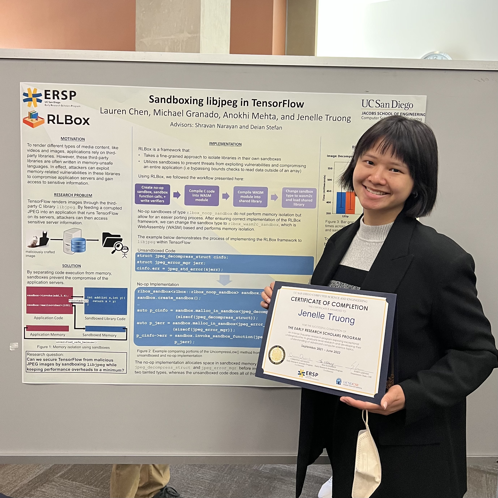
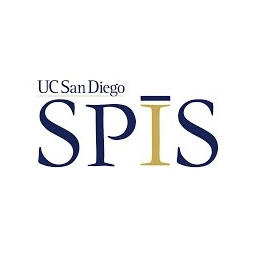

experiences
Jan 2023 - Present

Jun 2022 - Jan 2023
Undergraduate Researcher - Computing for Social Good Lab
Jun 2022 - Jan 2023
To study the respective online discussions surrounding mental burnout and problem gambling, I
manipulated and visualized large datasets utilizing the Python NumPy, Pandas, and Matplotlib
libraries.
I also implemented modularized pipelines for machine learning classification models, such as SVM, logistic regression,
random forest, through the Python library scikit-learn.
I led a team of five other undergraduate students by providing guidance to navigate the challenges of research and
overseeing progress of the burnout discourse project.
Both papers were presented at the UCSD Summer Research Conference and submitted to ICWSM.
To study the respective online discussions surrounding mental burnout and problem gambling, I manipulated and visualized large datasets utilizing the Python NumPy, Pandas, and Matplotlib libraries. I also implemented modularized pipelines for machine learning classification models, such as SVM, logistic regression, random forest, through the Python library scikit-learn. I led a team of five other undergraduate students by providing guidance to navigate the challenges of research and overseeing progress of the burnout discourse project. Both papers were presented at the UCSD Summer Research Conference and submitted to ICWSM.
Instructional Assistant
Mar 2022 - Dec 2022
I previously tutored CSE 20: Discrete Mathematics and CSE 100: Advanced Data Structures.
My main responsibilities include hosting office hours and one-on-one appointments to help over
350 enrolled students better understand course material and develop the necessary problem
solving skills for programming assignments in C++.
I previously tutored CSE 20: Discrete Mathematics and CSE 100: Advanced Data Structures. My main responsibilities include hosting office hours and one-on-one appointments to help over 350 enrolled students better understand course material and develop the necessary problem solving skills for programming assignments in C++.

Sep 2021 - May 2022
Undergraduate Researcher - Early Research Scholars Program (ERSP)
Sep 2021 - May 2022
I collaborated with three other students to sandbox the third-party C libjpeg library in
Tensorflow by applying the RLBox API and evaluate performance overheads of sandbox mechanism
through Image Compression benchmark suite.
Our group later presented a poster at the Jacobs School of Engineering Undergraduate Research
Symposium and ERSP National Conference.
I collaborated with three other students to sandbox the third-party C libjpeg library in Tensorflow by applying the RLBox API and evaluate performance overheads of sandbox mechanism through Image Compression benchmark suite. Our group later presented a poster at the Jacobs School of Engineering Undergraduate Research Symposium and ERSP National Conference.

Aug 2021 - Sep 2021